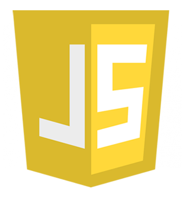

Java is a general-purpose computer programming language that is concurrent, class-based, object-oriented, and specifically designed to have as few implementation dependencies as possible. It is intended to let application developers "write once, run anywhere" (WORA), meaning that compiled Java code can run on all platforms that support Java without the need for recompilation.
As a multi-paradigm language, JavaScript supports event-driven, functional, and imperative (including object-oriented and prototype-based) programming styles. It has an API for working with text, arrays, dates, regular expressions, and basic manipulation of the DOM, but the language itself does not include any I/O, such as networking, storage, or graphics facilities, relying for these upon the host environment in which it is embedded. Initially only implemented client-side in web browsers, JavaScript engines are now embedded in many other types of host software, including server-side in web servers and databases, and in non-web programs such as word processors and PDF software, and in runtime environments that make JavaScript available for writing mobile and desktop applications, including desktop widgets. Although there are strong outward similarities between JavaScript and Java, including language name, syntax, and respective standard libraries, the two languages are distinct and differ greatly in design; JavaScript was influenced by programming languages such as Self and Scheme.
In November 1996, Netscape submitted JavaScript to Ecma International to carve out a standard specification, which other browser vendors could then implement based on the work done at Netscape. This led to the official release of the language specification ECMAScript published in the first edition of the ECMA-262 standard in June 1997, with JavaScript being the most well known of the implementations. ActionScript and JScript are other well-known implementations of ECMAScript. The standards process continued in cycles, with the release of ECMAScript 2 in June 1998, which brings some modifications to conform to the ISO/IEC 16262 international standard. The release of ECMAScript 3 followed in December 1999, which is the baseline for modern day JavaScript. The original ECMAScript 4 work led by Waldemar Horwat (then at Netscape, now at Google) started in 2000 and at first, Microsoft seemed to participate and even implemented some of the proposals in their JScript .NET language. Over time it was clear though that Microsoft had no intention of cooperating or implementing proper JavaScript in Internet Explorer, even though they had no competing proposal and they had a partial (and diverged at this point) implementation on the .NET server side. So by 2003, the original ECMAScript 4 work was mothballed. The next major event was in 2005, with two major happenings in JavaScript's history. First, Brendan Eich and Mozilla rejoined Ecma International as a not-for-profit member and work started on ECMAScript for XML (E4X), the ECMA-357 standard, which came from ex-Microsoft employees at BEA Systems (originally acquired as Crossgain). This led to working jointly with Macromedia (later acquired by Adobe Systems), who were implementing E4X in ActionScript 3 (ActionScript 3 was a fork of original ECMAScript 4). So, along with Macromedia, work restarted on ECMAScript 4 with the goal of standardizing what was in ActionScript 3. To this end, Adobe Systems released the ActionScript Virtual Machine 2, code named Tamarin, as an open source project. But Tamarin and ActionScript 3 were too different from web JavaScript to converge, as was realized by the parties in 2007 and 2008. Alas, there was still turmoil between the various players; Douglas Crockford—then at Yahoo!—joined forces with Microsoft in 2007 to oppose ECMAScript 4, which led to the ECMAScript 3.1 effort. The development of ECMAScript 4 was never completed, but that work influenced subsequent versions.
In 1993, the National Center for Supercomputing Applications (NCSA), a unit of the University of Illinois at Urbana-Champaign, released NCSA Mosaic, the first popular graphical Web browser, which played an important part in expanding the growth of the nascent World Wide Web. In 1994, a company called Mosaic Communications was founded in Mountain View, California and employed many of the original NCSA Mosaic authors to create Mosaic Netscape. However, it intentionally shared no code with NCSA Mosaic. The internal codename for the company's browser was Mozilla, which stood for "Mosaic killer", as the company's goal was to displace NCSA Mosaic as the world's number one web browser. The first version of the Web browser, Mosaic Netscape 0.9, was released in late 1994. Within four months it had already taken three-quarters of the browser market and became the main browser for the Internet in the 1990s. To avoid trademark ownership problems with the NCSA, the browser was subsequently renamed Netscape Navigator in the same year, and the company took the name Netscape Communications. Netscape Communications realized that the Web needed to become more dynamic. Marc Andreessen, the founder of the company believed that HTML needed a "glue language" that was easy to use by Web designers and part-time programmers to assemble components such as images and plugins, where the code could be written directly in the Web page markup. In 1995, Netscape Communications recruited Brendan Eich with the goal of embedding the Scheme programming language into its Netscape Navigator.[8] Before he could get started, Netscape Communications collaborated with Sun Microsystems to include in Netscape Navigator Sun's more static programming language Java, in order to compete with Microsoft for user adoption of Web technologies and platforms.[9] Netscape Communications then decided that the scripting language they wanted to create would complement Java and should have a similar syntax, which excluded adopting other languages such as Perl, Python, TCL, or Scheme. To defend the idea of JavaScript against competing proposals, the company needed a prototype. Eich wrote one in 10 days, in May 1995. Although it was developed under the name Mocha, the language was officially called LiveScript when it first shipped in beta releases of Netscape Navigator 2.0 in September 1995, but it was renamed JavaScript when it was deployed in the Netscape Navigator 2.0 beta 3 in December.[10] The final choice of name caused confusion, giving the impression that the language was a spin-off of the Java programming language, and the choice has been characterized[by whom?] as a marketing ploy by Netscape to give JavaScript the cachet of what was then the hot new Web programming language. There is a common misconception that JavaScript was influenced by an earlier Web page scripting language developed by Nombas named C-- (not to be confused with the later C-- created in 1997). Brendan Eich, however, had never heard of C-- before he created LiveScript. Nombas did pitch their embedded Web page scripting to Netscape, though Web page scripting was not a new concept, as shown by the ViolaWWW Web browser. Nombas later switched to offering JavaScript instead of C-- in their ScriptEase product and was part of the TC39 group that standardized ECMAScript.